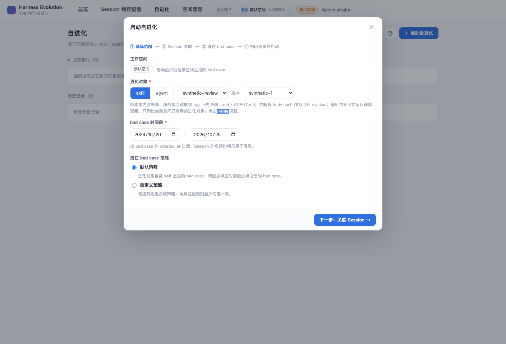
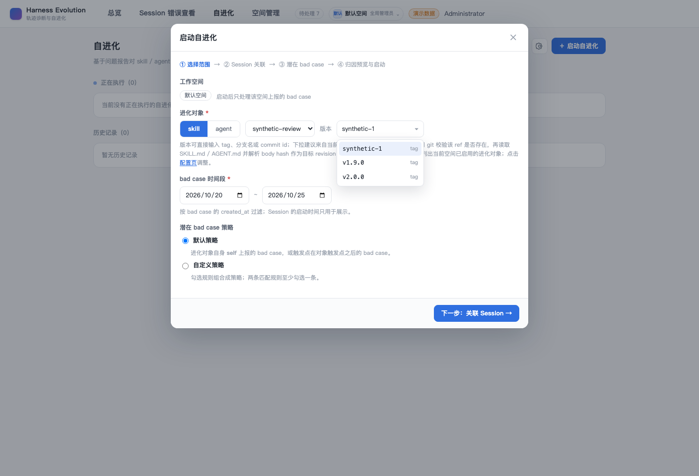
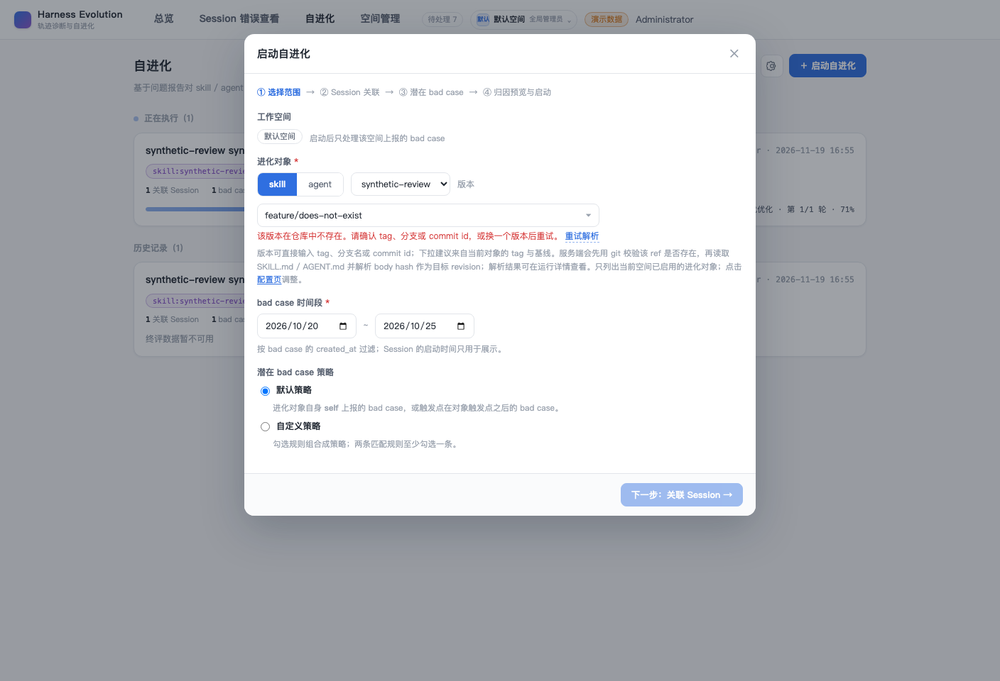

- Application
- Harness Evolution Web
- PR
- #384
- Base
- main bebe87c
- Head
- PR #384 head (review fixes)
- Fixture
- m10-05 synthetic-review / ws-default
Computer Use · Real Browser E2E Evidence
PR #384 · 启动自进化版本 ref 输入 Smoke Report
启动向导的版本字段已在生产实现中从 tag-only 下拉改为输入优先组合框：下拉给 tag/defaultRef 建议，输入框可直接填分支或 commit；服务端用 git 校验 ref 是否存在。真实浏览器 E2E 覆盖了修改前后、完整四步流程、缺失 ref 错误，全部通过。
5Smoke scenarios
2Defects fixed
22LaunchWizard tests
2Real-browser E2E
Environment and Artifact
2026-11-19 · macOS · Chrome headless · 1408×960Scenario Matrix
5 pass| # | Scenario | Result | Detail | Evidence |
|---|---|---|---|---|
| 01 | 修改前：版本只能选 tag | BEFORE | baseline 应用在相同 E2E fixture 下显示原生 tag 下拉，无法输入分支或 commit。 | 01-before.png |
| 02 | 修改后：输入 + tag 建议 | PASS | 版本字段为输入框 + 下拉建议；输入值为 synthetic-1 时菜单仍展示 tag 建议。 | 02-after.png |
| 03 | 缺失 ref 的 git 校验 | PASS | 输入 feature/does-not-exist，点下一步后服务端返回 ref_not_found；向导停在第 1 步并显示可操作错误。 | 03-missing-ref.png |
| 04 | 完整四步流程不回归 | PASS | 输入合法 tag 后正常进入 Session 关联、潜在 bad case、归因预览，并可启动 run。 | 04-step2.png 05-step4.png 06-run-detail.png |
| 05 | 分支 / commit 输入与 API 语义 | PASS | 组件测试覆盖分支 defaultRef、手输 commit/分支、提交 body；resolver 真实 git 测试证明 main 与其 commit 同 body hash，缺失 ref 返回 ref_not_found。 | No screenshot required; covered by component and resolver tests. |
Issues and Observations
P2 生产第一版使用原生 datalist，与原型可见下拉菜单不一致P2 focusCase 的分支/commit 版本线索被 tag 白名单丢弃
生产第一版使用原生 datalist，与原型可见下拉菜单不一致
- Actual
- 版本字段看起来是普通输入框，没有原型中的下拉按钮和可见 tag 菜单。
- Expected
- 输入框 + 可见建议菜单，同时允许自由输入。
- Root cause
- 原生 datalist 的弹出层不可控，截图与部分浏览器中不可见。
- Fix
- 改为自定义 input + 建议菜单 + listbox，样式对齐原型。
Fixed · custom combobox
focusCase 的分支/commit 版本线索被 tag 白名单丢弃
- Actual
- bad case 的 objectVersion 不在 tag 列表时回退到 defaultRef。
- Expected
- 非空版本线索优先带入，由服务端判断是否存在。
- Fix
- applyFocusCase 改为 objectVersion 优先，并补组件测试。
Fixed · focus case preserves ref
Evidence
3 screenshots


Automated Coverage Assessment
3 areas reviewed| Area | Coverage | Conclusion | Recommendation |
|---|---|---|---|
| 版本建议与默认值 | Component + E2E | defaultRef（含分支）优先，tag 建议可见，手输值不被异步覆盖。 | 后续如调整建议数据源，保持同一组件测试。 |
| git ref 存在性 | Resolver + E2E | 真实 git 解析 main/commit；缺失 ref 返回 ref_not_found。 | 生产仓库不可达/超时沿用现有 TARGET_CONTENT_UNRESOLVED 路径。 |
| 完整四步流程 | Real-browser E2E | 启动、Session 关联、潜在 case、归因预览与 run 详情均可用。 | 保留 m10-05 作为发布前 smoke。 |
Conclusion
Ready after CI生产版本 ref 输入、建议菜单、服务端 git 校验与完整四步流程均通过真实浏览器 smoke；两个检视缺陷已修复。
- 最终合并门禁仍以 PR #384 CI 与人工审查为准。
- 本报告由 E2E 证据生成，未使用真实生产仓库或凭据。
Generated from real-browser E2E evidence · Secrets are redacted.